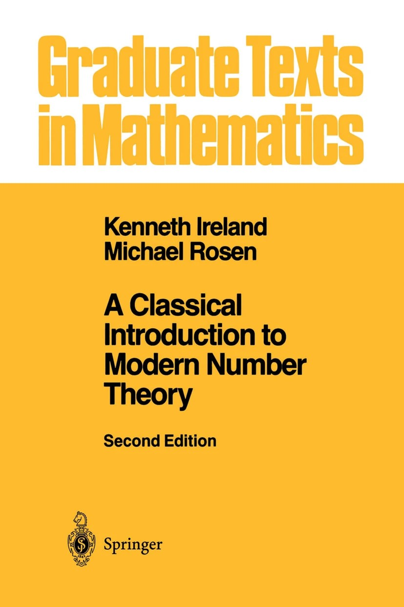

| Classes |
|---|
| Instructor |
|---|
| Text & Prerequisites |
|---|
|  |
A Classical Introdction to Modern Number Theory 2nd Edition by Kenneth Ireland and Michael Rosen. Please let me know if you are having trouble finding a copy. Reading will be a large portion of this course, so I encourage you to obtain this text in a format which works well for you. |
| Official Course Description and Goals |
|---|
Official Course Description: Introduction to number theory from the algebraic and/or analytic point of view. Includes some of the following: congruences, finite fields and rings, and quadratic reciprocity; quadratic forms and Diophantine equations; elliptic curves; the Gaussian integers, the Eisenstein integers, and unique factorization in these rings; other quadratic and cyclotomic fields and ideal factorization; and introduction to analytic number theory, primes in arithmetic progressions, and the prime number theorem.
Goals: The overarching goal for the semester is to gain a familiarity with the landscape of algebraic number theory.
Students will study reduction modulo primes, the separateness of primes via Sunzi's remainder theorem, and the subtle connections between primes via quadratic reciprocity.
Students will build on the familiarity with rings, ideals, and fields that they developed in Abstract Algebra
by working extensively with number rings and their rings of integers,
ameliorating the failure of unique factorization by establishing the unique factorization of an ideal into prime ideals in a number ring.
A deeper understanding of quadratic and cyclotomic number fields will culminate in using these structures to obtain an elegant second proof of quadratic reciprocity
and a proof of Fermat's last theorem for cyclotomic fields with class number one.
A larger goal that underpins the course is deepening maturity and independence in mathematics.
This includes developing the ability to communicate mathematics clearly and to independently learn mathematics.
We will spend our time reading, understanding, responding to, and creating mathematical arguments.
Students will demonstrate their learning by independently learning and presenting course content to the class.
To this end, we will create a welcoming and supportive classroom
community that gives us space to make mistakes and learn.
| Course Content |
|---|
Our primary reference will be
A Classical Introduction to Modern Number Theory 2nd Edition by Kenneth Ireland and Michael Rosen.
A very loose and almost sure to be augmented list of the chapters we will attempt to cover
| Chapter | Chapter Title | ||||||||||||||||||
| 1 | |
2 |
|
3 |
|
4 |
|
5 |
|
12 |
|
13 |
| |
| Important Dates |
|---|
| Tuesday, January 23 | First Day of Class |
|---|---|
| Tuesday, February 27 | Midterm 1 |
| Tuesday, April 2 | Midterm 2 |
| Thursday, May 9 | Our Last Day of Class |
| May 13-17 | Final Exam (Time TBD) |
| Grades |
|---|
What are grades? What purpose do they serve? What do they mean? This blog post outlines some problems with grades.
The following is the grading scheme that I would like to implement for the course.
I feel it strikes a balance between a variety of different manners of doing and presenting mathematics.
Please let me know if you would like to see any changes.
I would like everyone to understand how grades are calculated.
Presentation: The presentation is optional. Student are allowed to give one 10-15 minute presentation during the course. A student will correspond with me to choose a topic and prepare a concise and coherent exposition of this topic. I and other students can ask questions during the presentation, and I reserve five minutes at the end of a presentation to add my commentary. Depending on the quality of the presentation, the student’s lowest midterm grade is multiplied by a factor between 1.1 and 1.6. A very high quality presentation yields a factor of 1.6, while a lower quality presentation yields a factor closer to 1.1. For example, a student gives a decent presentation and receives a factor of 1.4. If their lowest midterm grade is a 50, then this grade becomes 50x1.4=70.
| Homework |
|---|
There will be psuedo-biweekly homework assignments this semester. They will be created by me.
They will feature exercises from the book and things I find interesting.
Due dates for homework assignments are given in the
Course Schedule.
Homework will be due via Gradescope.
In general, I will grade one or two homework problems in-depth and grade the rest for completion.
As the semester progresses, our standards for mathematical writing and logical argument will become higher.
Exams will feature problems that are remarkably similar to the homework or to problems we work in class,
so spending time completing homework to perfection is
doubly advantageous.
It is natural and expected to struggle on homework. You are encouraged to work together and come to office hours for help with homework. Homework is a place to learn how to do things! You may use whatever resources you wish on the homework as long as you cite your sources and submit your own work.
SupportSome big-picture resources are the Student Academic Support Services (SASS), Academic Success Center, and the academic support.
Finally, I have three+ hours a week that are specifically for helping y'all. Please come to my office hours with any questions! If you think a question is dumb or you think you "don't understand anything," then that is even more reason to come to my office hours. I am very used to struggling with math and I want to help everyone learn in this course. I can assure you that I have made math mistakes that are much more embarrassing than any mistake you will make in this course.
Class attendance is not mandatory this semester, though it is highly encouraged. I know things are difficult for everyone right now and I know flexibility is appreciated, so I will not grade participation directly. However, we will have in-class assessments.
| Midterms and Final |
|---|
We will have two in-class midterms and a final exam.
In-class midterms are closed book and notes. Midterms will last between 45 and 75 minutes.
Make-Up Policy: In general, no make-ups for exams will be given.
If you are going to miss a exam and can show proof of some officially acceptable reason, e.g.: a verifiably documented medical excuse
or a conflicting official university sanctioned activity that cannot be rescheduled, then we can make arrangements.
If you are sick or something comes up, then please let me know as far before the assignment or assessment is due as you can.
We will do our best to get through this semester safely and healthily.
On as case-by-case basis, I can try to make arrangements in a way that is as fair and equitable as possible.
Please avoid making travel arrangements that would not allow you to take the final at the scheduled
time. A final may be rescheduled if you have more than three finals in a single calendar day
or more than four final exams in a 24-hour period.
Please note that CSUSM does
| Student Learning Outcomes |
|---|
BS in Mathematics Student Learning Outcomes:
Students who graduate with a Bachelor of Science in Mathematics will be able to:
1. Apply the core concepts of algebra and analysis.
2. Explain mathematical ideas, written and verbally, in a clear and organized way.
3. Develop and write mathematical proofs.
4. Apply mathematical algorithms and use appropriate technology for the solution of mathematical problems and analysis of real world models.
5. Recognize the interdependency of different areas of mathematics, as well as connections between mathematics and other disciplines.
MS in Mathematics Student Learning Outcomes:
Students who graduate with a Master of Science in Mathematics will be able to:
1. Apply advanced concepts of algebra.
2. Apply advanced concepts of analysis.
3. Compose and present extended passages of mathematical prose following modern conventions of precision and clarity.
4. Develop and write mathematical proofs in advanced areas of mathematics.
5. Develop and analyze mathematical models and algorithms, utilizing appropriate software and drawing from different fields of mathematics when necessary.
| Synchronicity and Late Work |
|---|
Late assignments will have points deducted based on how late the assignment is. I reserve the right to deduct points from late work or award no credit for late work as I see fit. Unless otherwise noted or excepted, late work turned in after the last day of class will not be accepted. Generally, I am happy to give extensions if you let me know well before an assignment is due. If you are having trouble staying on top of your assignments, please come talk to me. My goal is to help you learn.
| Statement of Expectations |
|---|
I understand everyone is dealing with different things in their lives and I will do my best to be flexible and accomodating. I ask you to be open with me and to discuss issues with me when they come up. I will listen and do what I can to help you succeed in this course. Conversely, I am super excited to teach this course and I love this material, but this is my first time teaching it. I ask that you be understanding of the mistakes I will certainly make, and I ask that you give me honest feedback about how I can improve.
As individuals and as a class we will be respectful of everyone; language or behavior that discriminates against or excludes anyone will not be tolerated. We will avoid stereotypes about who is "good" at math. Math is difficult, but also beautiful, and as a class we will work together to overcome difficulties and share the beauty. This is especially true with group work. You must treat your group members with respect and engage in positive and constructive conversations. If you are curious about what this environment looks like, I invite you to check out the CSUSM Civility Campaign.
| Academic Integrity |
|---|
Students will be expected to adhere to the guideline of academic honesty and integrity, as outlined in the
CSUSM Standards for Student Conduct.
All assignments must be original work, clear and error-free.
All ideas/material that are borrowed from other sources must have appropriate references to the original sources.
Any quoted material should give credit to the source and be punctuated accordingly. Copying and pasting material from
a source such at ChatGPT is not original work, and claiming it as such is academic dishonesty. You may use AI to help
in your studying and in doing the homework; however, keep in mind that a model like ChatGPT is not designed for proof-based mathematics
and makes a plethora of errors, some subtle and some agregious.
Students are responsible for honest completion and representation of their work. Unless otherwise noted, all completed assignments are to consist solely of your own individual work and ideas without input from any external resources or persons. There will be zero tolerance for infractions. If you believe there has been an infraction by someone in the class, please bring it to the my attention. I reserve the right to discipline any student for academic dishonesty, in accordance with the general rules and regulations of the university. Disciplinary action may include the lowering of grades and/or the assignment of a failing grade for an exam, assignment, or the class as a whole. It is recommended that students consult the CSUSM Academic Honesty Policy.
| Support From Me |
|---|
I pledge to do my utmost as your instructor to support you and your success in this class. Regardless of your race, color, religion, sex, sexual orientation, gender identity or expression, age, disabilities, citizenship, or national origin, I am happy that you're taking this course and I am excited to help you learn math. I will do everything I can to make sure you feel welcome in our classroom and address any aspects or elements of the course that may make you feel unwelcome. This runs the gamut from being willing to make accomodations for religious observances to making sure our classroom is a supportive place. Please come to me with any concerns you have! I'm here to listen and to help give you the tools and conditions to be successful in this course.
| Policies on Children in Class |
|---|
| Expanded Credit Hour Statement |
|---|
As a three unit course, the award of credit in this course is based on learning activities outside of class meetings having been designed to require a minimum of six hours of effort each week working for most students. More prosaically, about two hours of work will be required for each 50 minutes we spend together in class. This work includes things like reading the text, working on homework problems, writing proofs, working in groups on projects, and studying for assessments.
| The Writing Center |
|---|
| Accessibility Issues |
|---|
If you have or think you have a disability and would like support, please let me know so that I can help facilitate accommodations. Students with disabilities who require reasonable accommodations must be approved for services by providing appropriate and recent documentation to the Disability Support Services (DSS) Office. This office is located in Craven Hall 4300, and can be contacted by phone at (760) 750-4905, or TTY (760) 750-4909, and by email sent to dss@csusm.edu. Students authorized by DSS to receive reasonable accommodations should meet with me during my office hours in order to ensure confidentiality.
For COVID-19 related class concerns (e.g., excused absences, missed exams, late work etc.), please contact your instructor. For all other COVID-19 related concerns that students wish to get campus support to address (e.g., exposure, diagnosis, ongoing symptoms, etc.), students should feel free to contact the Cougar Care Network. You are welcome but not required to let your instructor know of any COVID-19 related concerns.
| Cougar Care Network |
|---|
| Mandated Reporting & Resources |
|---|
| The Land We Are Occupying |
|---|